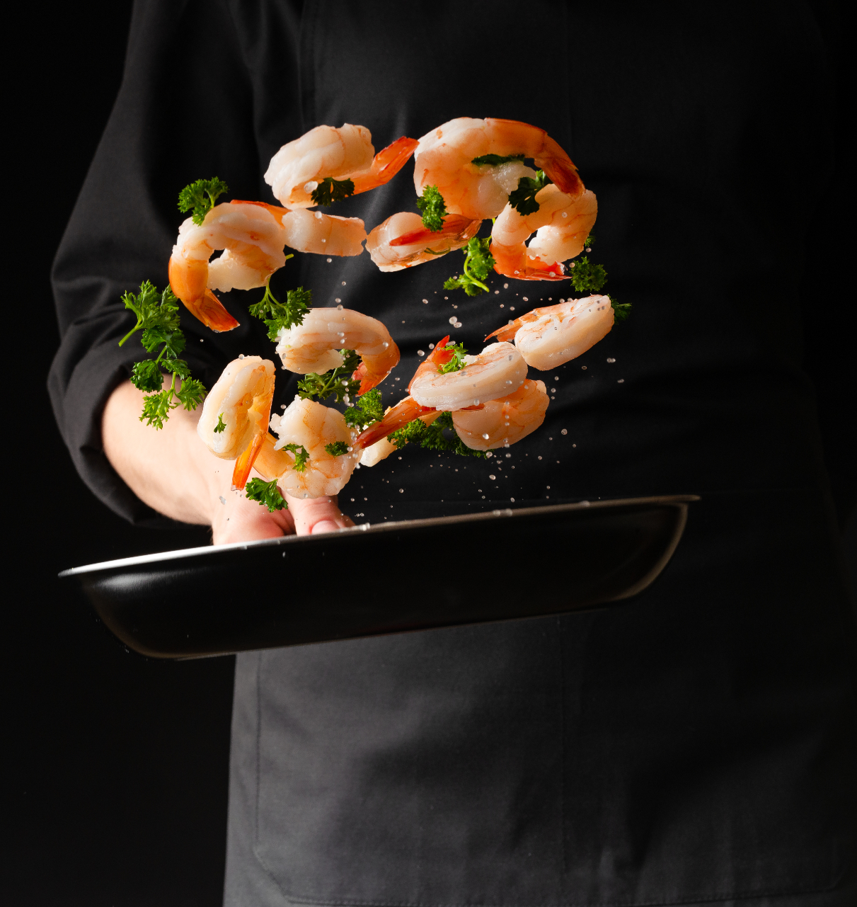

OM OSS
Skullerud sushi og asiatisk mat har holdt til på Skullerud siden 2016. Våre tre kokker _, Sinnappu og Tham jobber hver dag for å lage kvalitetssushi og eksotiske asiatiske varmretter.
Ta turen innom oss ved Skullerud T-bane for en smak av asia!
